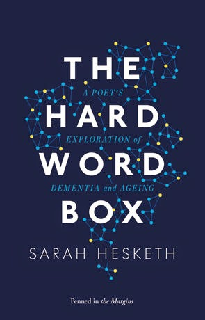
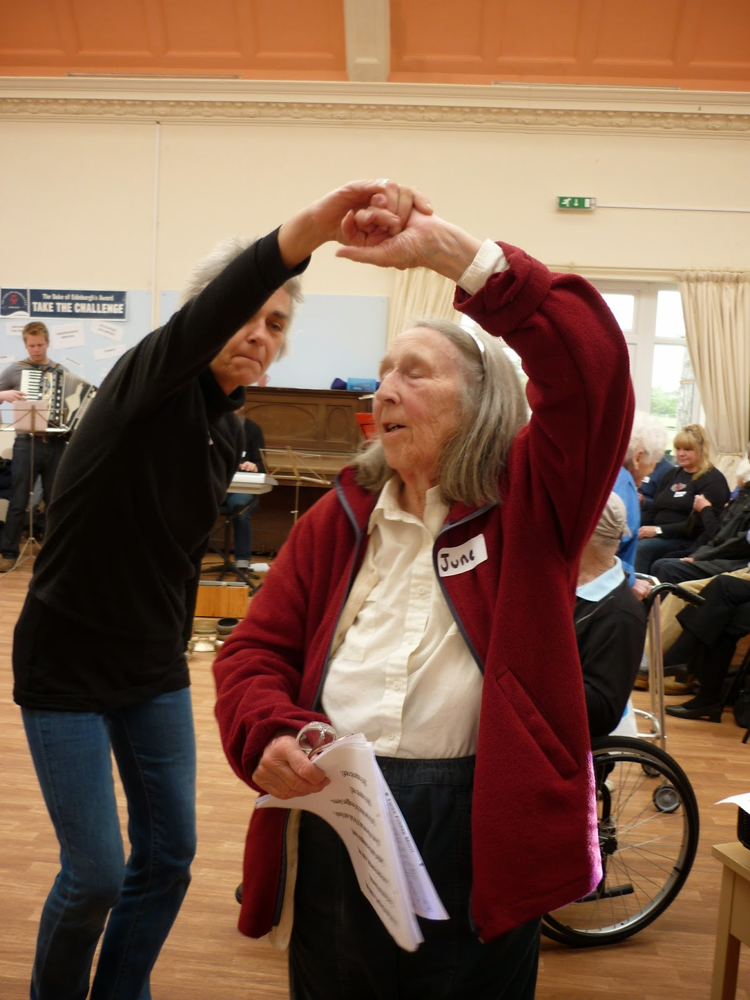

 |
| A Poet's Exploration of Dementia and Ageing by Sarah Hesketh |
{kind=link}
"Look, let's be clear: don't imagine
there is anybody here who enjoysdribbling poetry, If you think we're
holding stars on our tongues
that's your eyes want testing.
If you hear music when we grunt
you haven't understood exactly
what it is we needed to say.
You might enjoy the ruins
of our grammar, the way we
chew up our nouns to song.
It's not your hand that's getting
thinner on the blanket.
Please don't ask us to speak
the hard words all at once."
(The Hard Words)
Words go, as Alzheimer's Disease shrivels the brain. Nouns go first, it seems to me - and proper nouns first of all. They are perhaps the hardest words and the words that define an identity.
"It really hurts me," said one of my sons, "that Boommie doesn't know who I am."
"But she does,'" I tried to tell him. "She just can't remember your name."
"How can I have forgotten that?" says my mother in distress.
I try to comfort her with science. I tell her about a TV programme that I watched where there was a middle-aged stroke victim, an attractive, articulate woman -- I think she might even have been an interpreter before the Clot Stopped. Her brain was wired-up to one of those scanners and the researcher was showing her a pineapple. She could describe it, she could tell us about its taste,where it came from and how it might be used. She could not say the name. As she struggled and circumlocuted the electrodes connected to the different areas inside her skull flashed bright or brighter. Only the light connected to the area that stores nouns stayed obstinately blank.
I had never known that there was an area in the brain specifically dedicated to nouns. It seems extraordinary until one thinks a little more. What are those first words that most babies learn? Mumma, Dadda, dog, duck, teddy, lorry. First Word books are lists and lists of names. First into the mind, last out? It doesn't seem to work like that.
 |
| My mother dancing at Turtle Song a music project that was one of the highlights of her recent years |
{kind=link}
"Why can't I remember? She'll think I'm so rude."
"No she won't mum. She knows it's not your fault. You've got an illness."
'"What illness? I'm not ill ...oh, you mean that horrible man, the one that's inside my head." And she touches a particular spot on her right temple where she says she has That Feeling.
"But he wasn't a bad man, mum. He was a good man. He was trying to explain to people that forgetting things is an illness. You can't help it."
But give it thirty seconds and my scientific explanation's gone: only the feelings of inadequacy, guilt and fear remain.
When Sarah Hesketh began work on the poems in the Hard Word Box, it was as an artist-in-residence at the Lady Elsie Finney House, a dementia care home in Preston, Lancashire.
"For the residents I was working with language was something difficult; something they now had to fight with; something, even, to be afraid of."
Hesketh developed this perception further:
"What I hadn't anticipated was how quickly, when people are no longer trusted to speak for themselves, language and texts begin to accrue around them, One of the first things I had to do was learn the language of care: people are 'service users'; looking after a person is 'person-centred care'; you don't suffer from dementia, you are a person with dementia. Then I became fascinated with the language of the care plans that are produced for each resident. These plans are meant to provide a record of person's interests, their likes and dislikes, so that the staff can develop a better understanding of the people it their care. The result was a strange set of profiles comprised of often random-sounding details. Just as people begin to struggle to articulate clearly who they are, a whole set of alternative identities are being created for them."
The word NO is an early one to trip from the blessed infant's tongue -- and that, and its variants, appears to remain. My mother shouts it out quite often, together with a terrible wailing "lay, lay, lay". In Hesketh's poem, Doreen, the bland language of the care plan (or the Who Am I? document) is interrupted by shouts. "Doreen is a widow / Doreen has one son and a daughter in law in the Preston area / Doreen loves flowers" "HORRIBLE HORRIBLE HORRIBLE HORRIBLE" "SHUT UP SHUT UP SHUT UP SHUT UP"
"If you hear music when we grunt / you haven't understood what it is / exactly that we needed to say." (The Hard Words) There is very little prettifying that can be done with the hard facts of dementia. All we can do, if we have to speak on behalf of those who can no longer reliably retrieve words they need, is to choose our language with utmost care, make it the best, the most sensitive and individual that is in our power.
My friend, the novelist Nicci Gerrard, watched her father gradually succumbing to Alzheimer's: "I sometimes thought of him as a great city whose lights were going out but so slowly that you hardly noticed."
Then he went into hospital to have his leg ulcers treated. He was there for five weeks with very little support from his loving family as the ward was closed to visitors for much of his stay. "My father entered hospital articulate and able, he came out a broken man."
Nicci's eloquence and grief have touched the hearts of thousands: both those who have suffered similar loss and those who imagine, for one chilling moment, what it might have been like for John Gerrard, as he lay there those five weeks.
Five weeks. He went in strong, mobile, healthy, continent, reasonably articulate, cheerful and able to lead a fulfilled daily life with my mother. He came out skeletal, incontinent, immobile, incoherent, bewildered, quite lost. There was nothing he could do for himself and this man, so dependable and so competent, was now utterly vulnerable. He could not sit up. He could not turn over. He could not put one foot in front of the other. He could not lift a fork or a glass to his mouth. He could not string words into a sentence – indeed, he could barely make a word...He did not know where he was, who most of his friends were, sometimes perhaps he no longer knew who he himself was.
These words have inspired John's Campaign for the right to stay with people with dementia in hospital. Sarah Hesketh allowed me to speak about it at the launch of The Hard Word Box but however skilled with written or spoken language all of us try to be, we must remember that:
"It's not (y)our hand that's getting
thinner on the blanket."
Yet.
So I'll finish (once again) with the letter of support that my mother wrote - and which Nicci pushed into the hand of David Cameron's minder as the Prime Minister strode away from the Andrew Marr show last Sunday.
{kind=link}